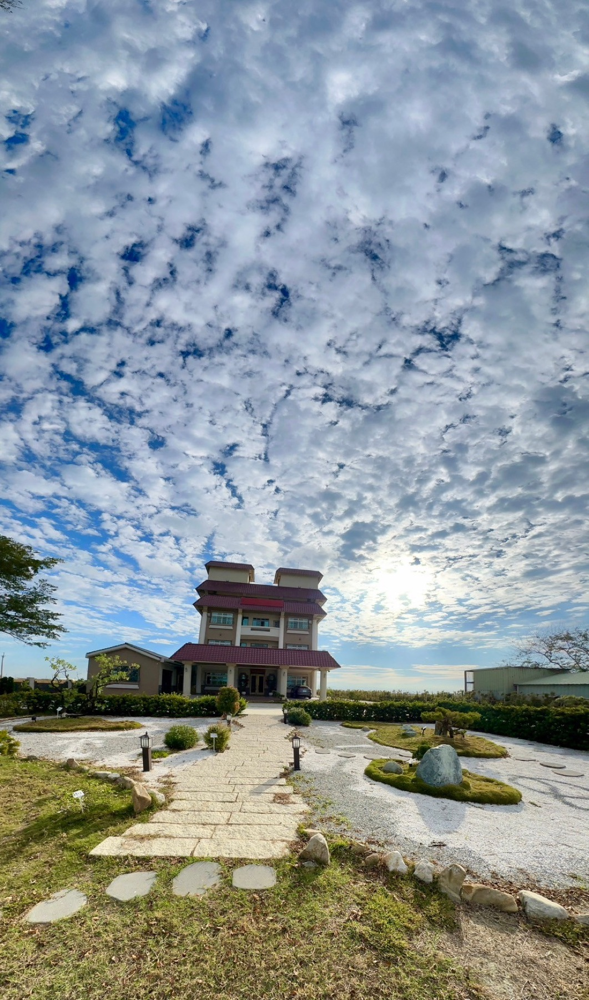

理法・修煉・愿景使命
讓生命回到內在本有的清明
昊道文化是一個以「理法、修煉、愿景使命」為三維根基的生命學習型、修煉型、與愿景實踐的團隊。
我們主要推廣「聖賢智慧與心智教育」，透過課程、活動、共學交流、修煉實踐與志工服務，陪伴人們看見自己、理解自己、轉化自己，在學習中明理，在生活中修煉，在修煉中轉化。
我們相信，生命成長不只是懂得更多，而是逐漸活得更清明、更從容，更有智慧、愛與力量。
用生命陪伴生命，用修煉陪伴成長；在愿行中發光，成為別人的好環境，也陪伴更多人看見自己本自具足的光與力量。
讓愛持續傳出去，提升內心文明與生命維度，回到內在本有的清明，活出生命本質實相。